Psychology
Goal Domain Breakdown
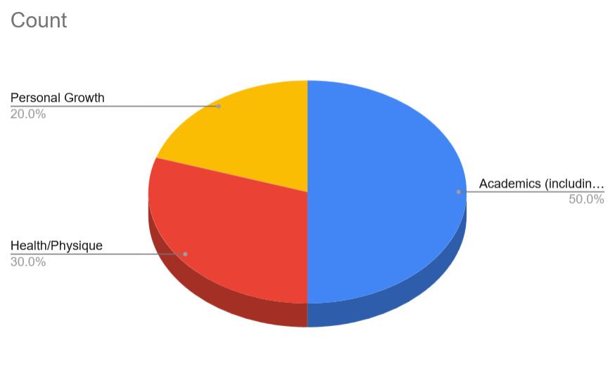
User Research & Behavioral Insights on Goal Execution
An empirical investigation into goal-setting dynamics, procrastination triggers, accountability mechanisms, and loss-aversion incentives across demographic cohorts.

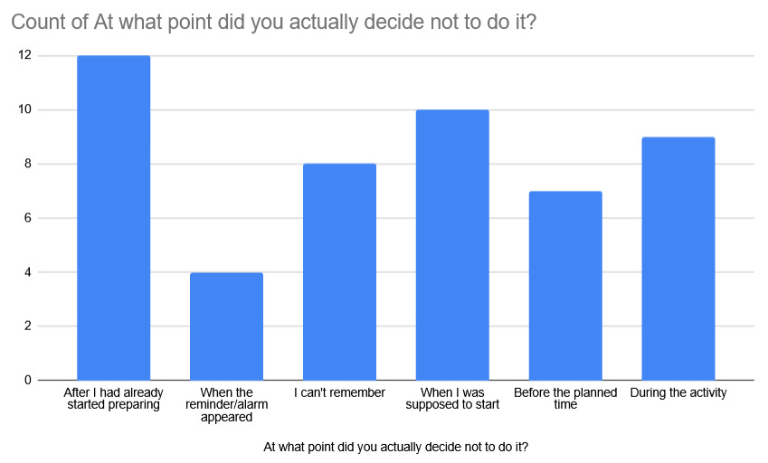
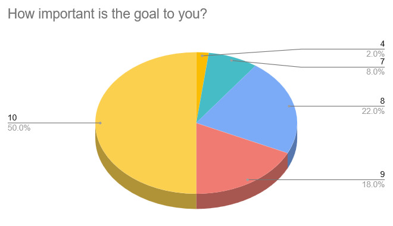
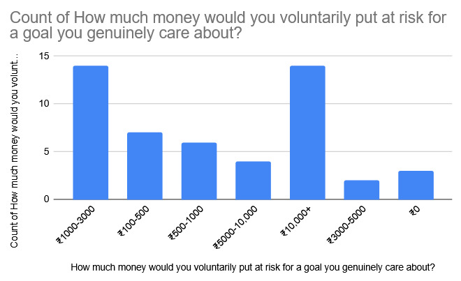
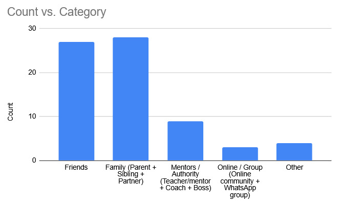
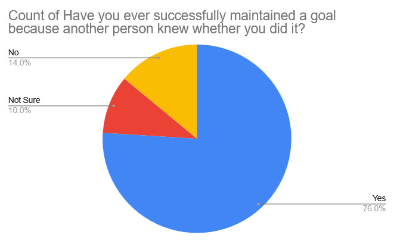
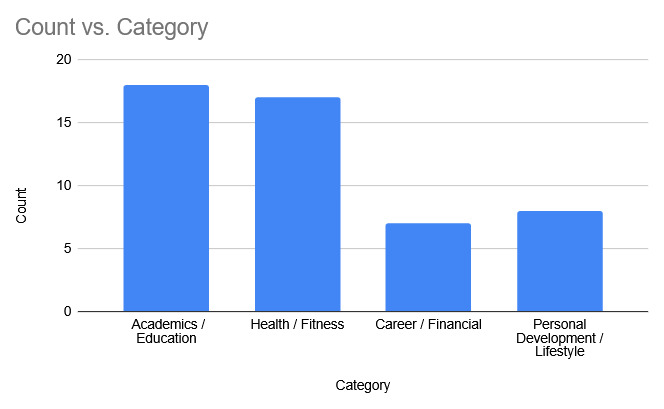
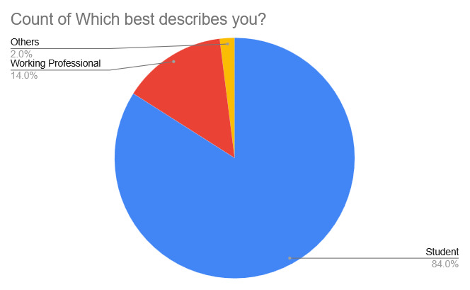
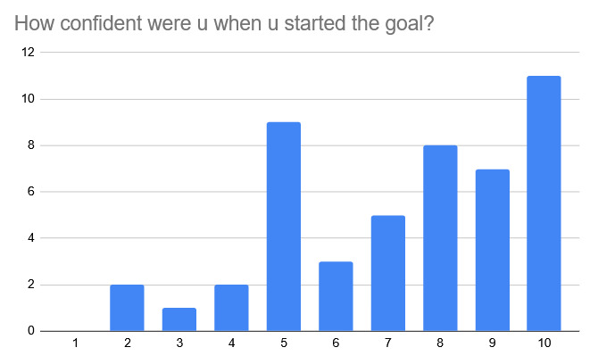
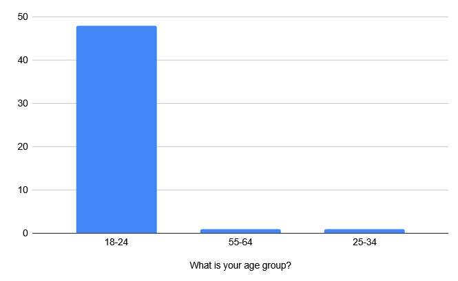
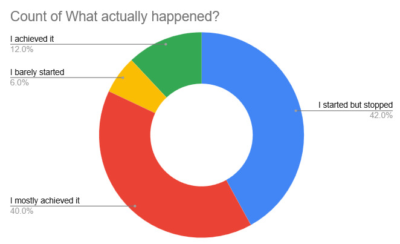


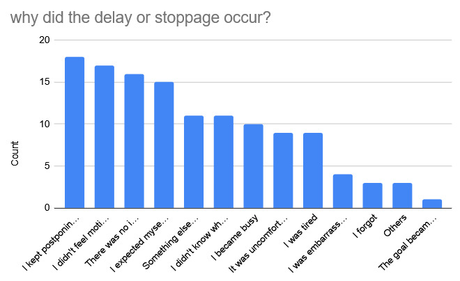
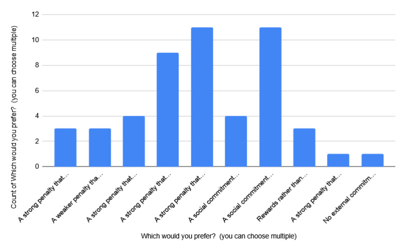
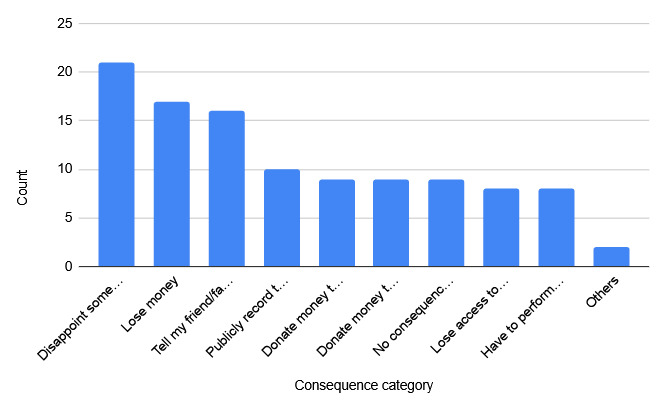